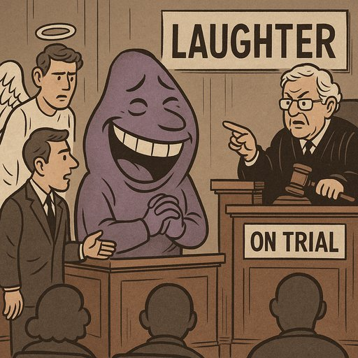

Publicado em 2025-06-21 21:13:41

Há qualquer coisa de profundamente perturbador quando artistas que viveram do palco, da exposição e da aclamação pública, decidem processar... uma piada.
Se os Anjos vencerem este processo e receberem um milhão de euros por comentários humorísticos, abre-se um precedente jurídico de cortar o pio — não só aos humoristas, mas a qualquer cidadão com uma opinião mordaz.
Joana Marques, com o seu humor ácido mas claramente satírico, não atacou com ódio. Atacou com riso — que é, muitas vezes, a forma mais elevada de crítica. Transformar isso em matéria de tribunal é pôr a gargalhada sob vigilância judicial.
Pergunta-se:
📌 Quando o humor se transforma em alvo, quem mais se seguirá? Um cartoonista? Um colunista? Um cidadão num post de Facebook?
Pedir um milhão de euros por danos causados por um sketch é como querer multar o vento por despentear um ego. E o mais grave: judicializar o humor não é proteger a dignidade — é alimentar a censura.
"Se os Anjos receberem um milhão da Joana Marques, cada riso futuro poderá custar uma fortuna. E uma sociedade onde se tem medo de rir... é uma sociedade já vencida."